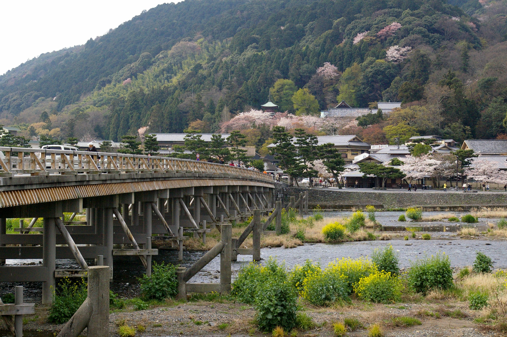
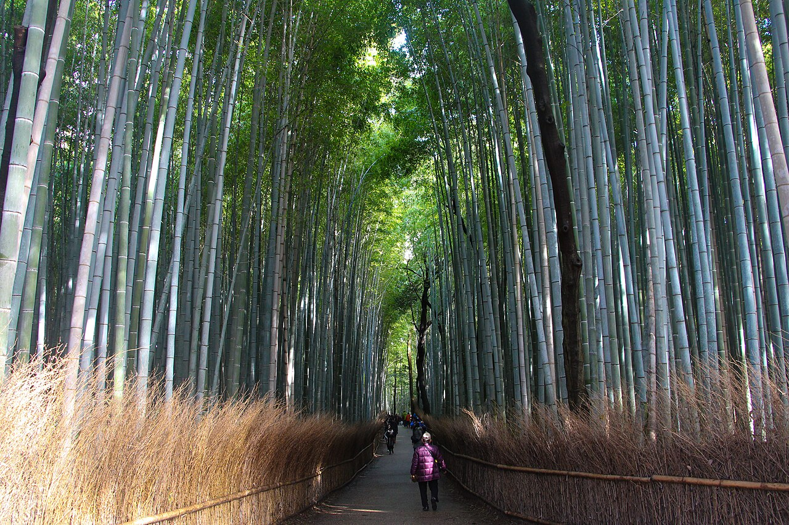

01 / EXPERIENCE
대표 경험
풍경과 문화,
직접 해보고 싶은 일.

풍경과 문화,
직접 해보고 싶은 일.
계절별 특징과 행사 일정,
방문 전 고려사항.
공식 출처·확인일.
미확인 항목은 별도 표시.
03 / BEHIND THE JOURNEY
기록이 여행이 되기까지
여행 정보는 보기 좋게 정리하는 것만큼 확인하는 과정이 중요해요.
TripeE가 준비하는
콘텐츠 검토 흐름입니다.
구현 예정인 운영 흐름이며 자동 검증을 보장하지 않습니다.
자료의 출처 확인하기 ↗04 / A DIFFERENT PERSPECTIVE
한 장의 풍경, 하나의 시작
Kyoto, Japan
05 / BEFORE YOU GO
설렘 다음에 필요한 것풍경과 문화, 도시에서 보내는 시간.
내가 원하는 여행의 모습을 그려보세요.
방문 시기와 이동, 여행 전 고려사항.
도시의 매력과 현실을 함께 살펴보세요.
안전정보의 출처와 확인 시점을 확인하세요.
미확인 정보는 안전함을 의미하지 않아요.
제공할 정보의 구성 안내입니다. 도시별 콘텐츠는 자료 검토 후 제공할 예정이에요.
06 / CHOOSE YOUR FIRST STOP
이제, 당신의 차례